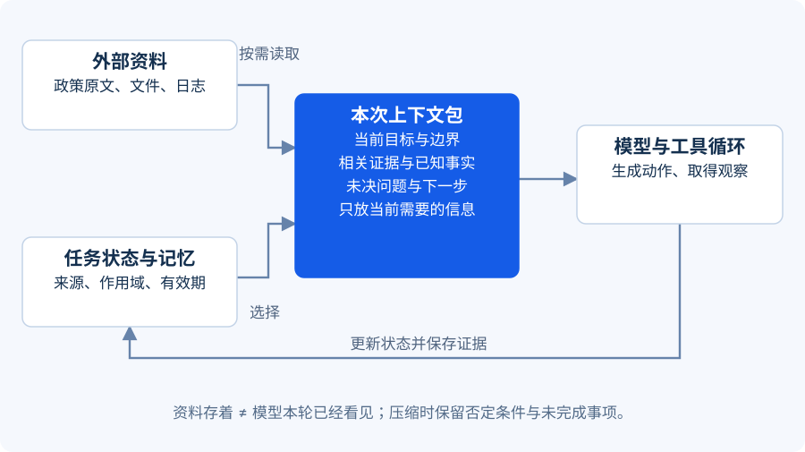

开场：交接班时，谁还记得发生过什么？
想象两名工程师轮班处理一个故障。下一班只收到“前面做了很多，继续加油”，一定要重新排查。Agent 跨上下文窗口、跨进程恢复时也需要明确交接材料。
本课产出：一个上下文包、一份检查点记录、一条恢复规则。
{kind=link}

上下文、状态、记忆分别放什么
**上下文（context）**是本次模型调用实际能看到的信息；**状态（state）**是应用记录的任务进度；**记忆（memory）**是按规则保留并在以后检索的信息。数据库里有记录，不等于它已经进入模型上下文；模型“说自己记住了”，也不等于系统真的保存了。
| 信息 | 存在哪里 | 进入下一次模型调用吗 |
|---|---|---|
| 当前目标、禁止动作 | 指令与任务状态 | 通常需要 |
| IT-2048 已确认事实 | 结构化任务状态 | 需要相关字段 |
| KB-MFA-03 原文 | 知识库或文件 | 只加载相关段落及来源 |
| 一百次重复超时输出 | 轨迹日志 | 通常只保留摘要和最近错误 |
| 待核验身份 | 状态中的未完成事项 | 必须保留 |
| 用户长期偏好 | 有来源和作用域的记忆存储 | 按任务需要读取 |
上下文工程的要点是选择、组织与更新每轮模型可见的信息。它包含提示词，还包含工具结果、历史、检索资料等。上下文工程原文。
一个可用的上下文包
下面是课程自定义的教学结构，不是某个框架的 API。
{
"goal": "生成 IT-2048 处理草案，不执行账户变更",
"facts": [{"text": "员工更换手机", "source": "ticket:IT-2048"}],
"evidence": [{"id": "KB-MFA-03", "version": "demo-v1", "section": "恢复前核验"}],
"unknowns": ["身份尚未通过独立渠道核验"],
"completed": ["读取工单", "检索政策"],
"next": "检查草案是否保留人工核验步骤",
"constraints": ["只读", "缺失事实不得补写", "达到预算立即交接"]
}
这里最容易被压缩丢掉的，是 unknowns 和 constraints。摘要写得流畅却把“尚未核验”压成“需要恢复账户”，会改变后续行动。压缩后应检查关键否定、权限边界、证据来源和未完成事项是否仍然存在。
Harness 是模型外面的工作环境
Harness 可以译为 Agent 运行框架。它组织模型调用、工具执行、状态、预算、日志与恢复。并不是每个项目都要自研一套，但需要知道这些责任落在哪里。
课程建议把任务进展写成：待开始 → 运行中 → 待人工处理 / 成功交付 / 失败 / 达到预算。暂时没有新 token，并不代表任务成功；“草案已经生成”也不代表账户已恢复。
长期任务宜留下三个交接物：验收清单、可继续的工作产物、含证据的进度记录。Anthropic 的长期运行实践用初始化和后续增量工作会话来组织开发任务，并强调交接记录与验证。这是具体工程经验，不能理解成长期自主工作已经普遍解决。长期任务实践。
检查点能恢复进度，不能消除副作用
假设系统已成功发送通知，但在记录成功之前崩溃了。恢复后重跑发送节点，可能重复发信。解决方法不能只有“保存更多对话”：执行方应支持幂等键，或者先查询操作结果，并把操作 ID、状态及回执持久化。
LangGraph 的官方持久化文档区分线程状态检查点和跨线程的数据存储。内存实现适合演示，进程重启后不会保留；持久化恢复需要相应存储与应用设计。LangGraph Persistence。
本课程离线实验只写输出文件和轨迹，不实现生产级检查点恢复。读者可以先完成“重启后知道做到哪一步”的扩展，再考虑有副作用的动作。
Deep Agents 应该怎么理解
Deep Agents 是 LangChain 生态提供的 Agent 运行框架之一，围绕文件系统、子代理及上下文管理等能力组织复杂任务，底层使用 LangGraph。它并不是一种比普通 Agent 必然更聪明的新模型。截至核查日，官方文档说明 v0.7 起任务规划默认不启用；需要规划清单时，应显式加入 TodoListMiddleware。复制旧教程之前，应先核对自己安装的版本和启用项。Deep Agents 官方文档。
选型先问：我需要的是少量工具的简单循环，还是长任务的隔离环境、状态恢复和上下文卸载？框架功能越多，越需要明确谁负责存储、授权与执行成本。
练习：压缩一份交接记录（15 分钟）
原记录包含：50 次重复工具日志、已读工单、已读政策、身份未核验、一个草案、一次检索超时、不得变更账户、剩余两步预算。请压成六项，说明哪些内容不能删。
展开参考答案 · 先试着自己回答
可写为：目标与只读边界；已确认工单事实及来源；政策 ID/版本/相关条款；身份未核验；草案路径与尚未通过的检查；最近错误、剩余预算及下一步。重复日志可以保留索引而不全文加载。不能删掉“未核验”“不得变更”“剩余预算”，也不能把模型猜测升级为事实。